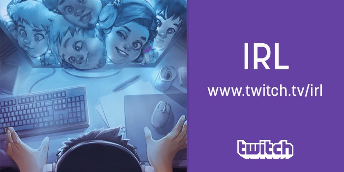
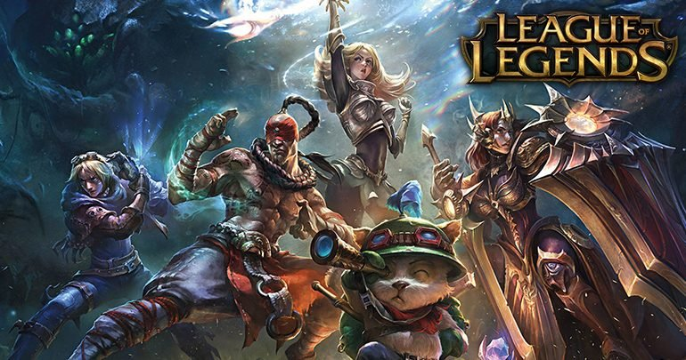

LoL
Si te gusta el LoL aca podes encontrar numerosos creadores de contenido para aprender y divertirte.
Hace click aca
CS:GO
Si estas interesado en el CS:GO y los e-sports, entra aca vas y explora las transmisiones relacionadas a esto.
Hace click aca